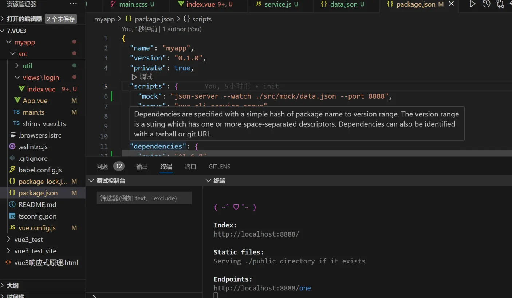
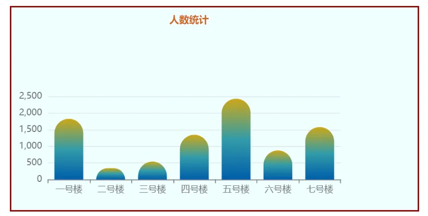
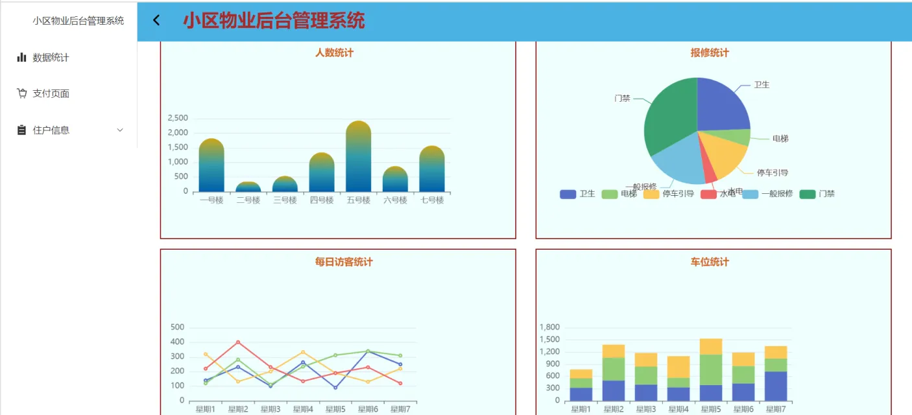
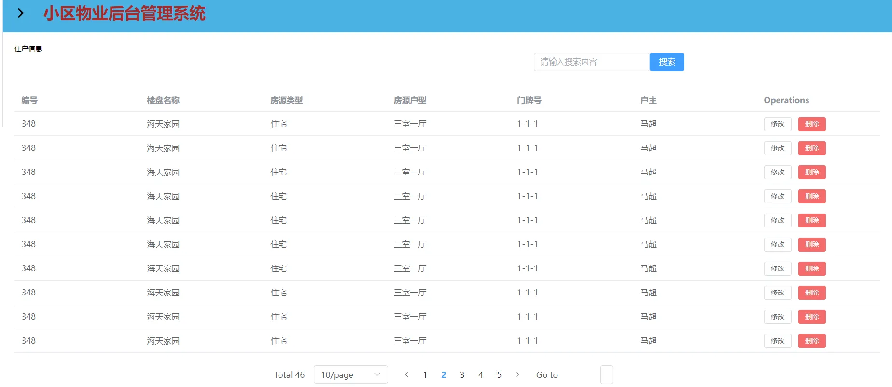
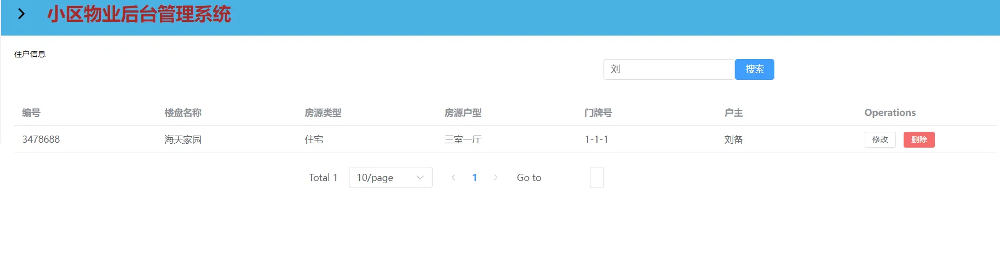
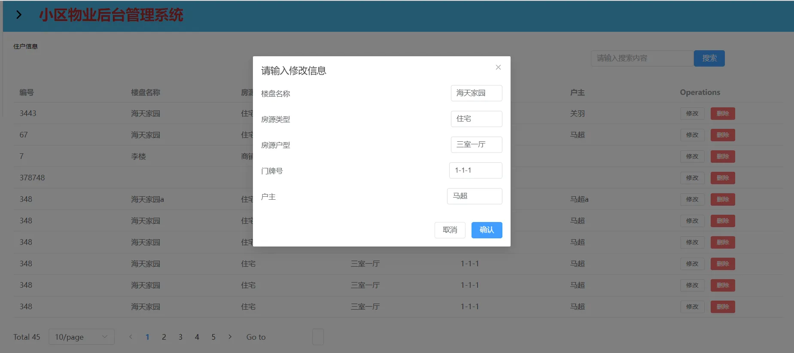

一.项目介绍
本项目基于 Vue3+Element UI 完成了小区后台管理系统，其中包括登录与注册模块，用户信息列表模块，用户信息修改模块，可视化统计表展示模块以及支付页面模块。
二.登录与注册
登录与注册模块：
1.ajax
我们在 util 文件夹，创建 axios 实例发送异步请求，并且添加请求拦截器和响应拦截器，以便在发起请求和接收响应时进行一些通用的处理。
1
| npm install axios --save
|
1
2
3
4
5
6
7
8
9
10
11
12
13
14
15
16
17
18
19
20
21
22
23
24
25
26
27
28
29
30
31
32
33
34
35
| import axios from 'axios'
let axiosurl = ""
if(process.env.NODE_ENV === "development"){
axiosurl = process.env.VUE_APP_API
}
else {
axiosurl = process.env.VUE_APP_API
}
//创建axios实例
const service = axios.create({
baseURL:axiosurl
})
// 添加请求拦截器
axios.interceptors.request.use(function (config) {
// 在发送请求之前做些什么
return config;
}, function (error) {
// 对请求错误做些什么
return Promise.reject(error);
});
// 添加响应拦截器
axios.interceptors.response.use(function (response) {
// 2xx 范围内的状态码都会触发该函数。
// 对响应数据做点什么
return response;
}, function (error) {
// 超出 2xx 范围的状态码都会触发该函数。
// 对响应错误做点什么
console.log('error', error);
return Promise.reject(error);
});
export default service
|
然后在 API 文件夹下创建封装数据请求的函数 link。通过之前定义的 Axios 实例 service 发起 HTTP 请求。
1
2
3
4
5
6
7
8
9
10
11
12
13
14
15
16
17
18
| import service from "../util/service"
//封装相关数据请求
let link=(url,method="get",data,params)=>{
return new Promise((resolve, reject)=>{
service.request({
url,
method,
data,
params
}).then((ok)=>{
resolve(ok)
}).catch((err)=>{
reject(err)
})
})
}
export default link
|
前端的 ajax 请求基本封装完了，接下来我们在mock 文件夹下使用下载** json-server** 模拟服务器端接口数据，这样可以不依赖后端 API 进行开发。
1
| npm install -g json-server
|
然后可以使用 npx 运行 json-server：
在 package.json 重新命名在启动 **npm run mock **方便
服务器启动：

获取注册数据：

2.js-md5 密码加密
为了保证登录注册的安全性，我们采用 js-md5 对输入的密码进行加密。
封装 hook 加密：
1
2
3
4
5
6
7
8
| import md5 from "js-md5";
import { ref } from "vue";
export default function(data){
let md5Data = ref(md5(data))
return md5Data
}
|
对输入的数据我们使用 md5 方法进行加密：
1
2
3
4
| let data = {
text: ruleForm.text,
pwd: useMd5(ruleForm.pass).value
}
|
三. 可视化图表
安装可视化图表库echarts
1
| npm install --save echarts
|
我们先在 App.vue 引入echarts
1
2
3
4
5
6
| <script setup>
// 引入可视化图表库
import * as echarts from "echarts"
import {provide, Provider} from "vue"
provide("echarts", echarts)
</script>
|
再使用 inject 函数注入了名为 $echarts 的变量，用于获取 ECharts 实例。在 onMounted 钩子中，首先通过 Link 函数请求了一个 API (apiUrl.chartData0ne) 用于获取数据，并将数据分别存储到 xdata 和 ydata 中。
然后初始化 ECharts 实例 myChart，并使用 setOption 方法设置了图表的配置选项。x 轴的数据使用请求回来的数据，而 y 轴的数据则是固定的，series 中定义了图表的类型为柱状图（bar），以及柱状图的样式配置，包括颜色渐变和圆角等。
1
2
3
4
5
6
7
8
9
10
11
12
13
14
15
16
17
18
19
20
21
22
23
24
25
26
27
28
29
30
31
32
33
34
35
36
37
38
39
40
41
42
43
44
45
46
47
48
49
50
51
52
53
54
55
56
57
58
59
60
61
62
63
64
65
66
67
68
69
70
71
72
73
74
75
76
77
78
| <template>
<div>
<h2>人数统计</h2>
<div class="chartone"></div>
</div>
</template>
<script setup>
import { inject, onMounted, reactive } from "vue"
import Link from '../API/Link.js'
import apiUrl from '../API/url.js'
let data = reactive({})
let xdata = reactive([])
let ydata = reactive([])
let $echarts = inject("echarts")
onMounted(() => {
let myChart = $echarts.init(document.querySelector(".chartone"))
Link(apiUrl.chartData0ne).then(ok => {
let { data } = ok
xdata = data.map(v=> v.title)
ydata = data.map(v=> v.num)
})
myChart.setOption({
xAxis: {
type: "category",
data: xdata
},
yAxis: {
type: "value",
},
tooltip:{},
series: [
{
type: "bar", //定义图表的类型为柱状图
data: ydata,
itemStyle:{
normal:{
barBorderRadius:[20,20,0,0],
color:new $echarts.graphic.LinearGradient(0,1,0,0,[
{
offset:0,
color:"#005eaa"
},
{
offset:0.5,
color:"#339ca8"
},
{
offset:1,
color:"#cda819"
},
])
}
}
}
]
})
})
</script>
<style>
h2 {
height: 60px;
color: chocolate;
line-height: 0.6rem;
font-size: 0.25rem;
margin-left:4rem;
}
.chartone {
height: 5rem;
}
</style>
|
效果如下：

我们查询 echarts 官网，根据上面的方法，总共绘制了如下图表：

三.二维码生成
安装 qrcodejs2 生成二维码,具体过程如下：
1
2
3
4
5
6
7
8
9
10
11
12
13
14
15
16
17
18
19
20
21
22
23
24
25
26
27
28
| <template>
<div class="content">
<div class="inputDom">
<el-input v-model="input" style="width: 240px" placeholder="请输入收款金额" />
<el-button type="success" @click="MakeQRcode">生成二维码</el-button>
</div>
<div class="qrcode" ref="qrcodeDom"></div>
</div>
</template>
<script setup>
import {ref, nextTick} from "vue"
import QR from "qrcodejs2"
const input = ref('')
let qrcodeDom = ref(null)
let MakeQRcode=()=>{
//防止多次生成二维码
qrcodeDom.value.innerHTML = ""
nextTick(()=>{
new QR(qrcodeDom.value, {
text:input.value,//生成二维码内容
colorDark:"#000", //二维码颜色
coloeLight:"#fff", //二维码背景色
//correctLevel:QR.CorrectLevel.H
})
})
}
</script>
|
效果如下：
四.其他部分
用户列表展示：

搜索功能：

修改功能：
